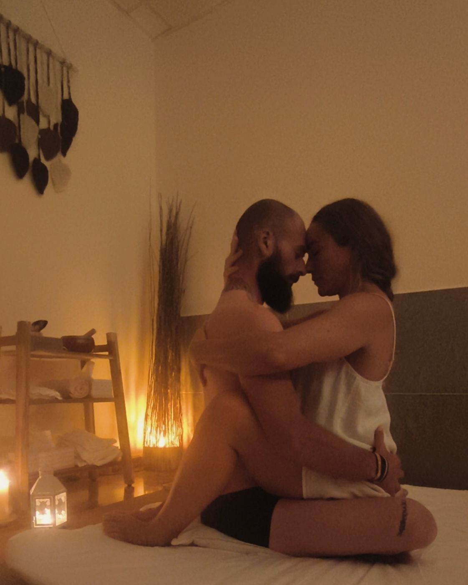
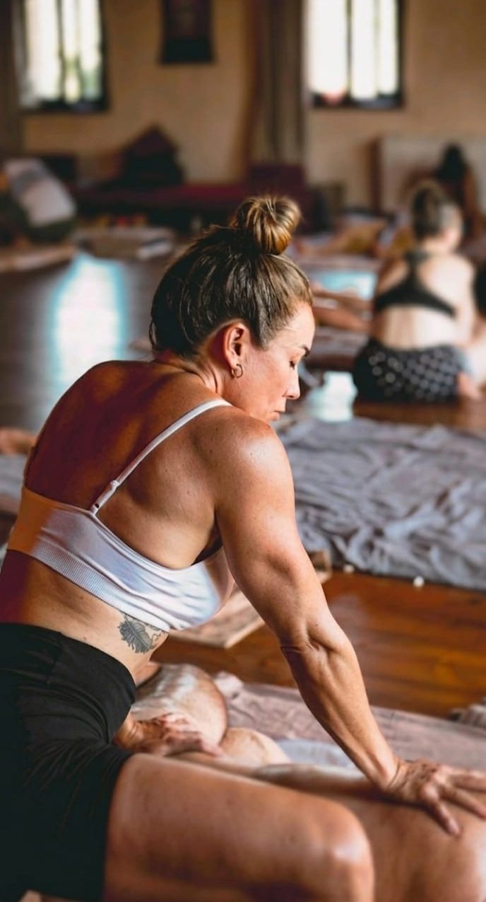
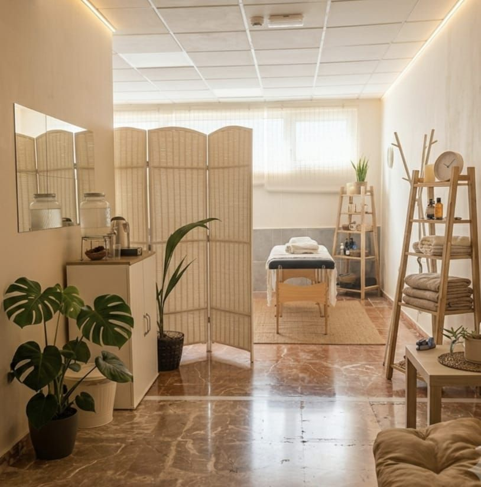

Málaga · by appointment
The art of touchTantra in Málaga · tantric massage for him, for her and for couples
“There are places you go to switch off… and spaces you come to reconnect.”
Who I am
Hello, I'm Dámaris
My space is not just a massage room: it is a safe space to feel yourself, inhabit yourself and come back to you through conscious touch.
Get to know meA minute with me
Feel the space before you come
Before I receive you, I settle into presence. Lighting a candle is not just lighting a room: it opens a temple.
What a session is like
The massage begins before the touch.
- The Welcome Ritual, listen: before touching, there is listening. We talk using Nonviolent Communication to get to know each other and agree on your boundaries.
- The Welcome Ritual, breathe: we breathe together until your nervous system slows down. The body needs that transition before it can let go.
- Conscious Touch: full presence and active listening to the body. I respond to what it needs, moment by moment.
- Feel again: a loose jaw, lowered shoulders, deep breathing. When the body has a safe space, the mind rests on its own.
What I do
Ways to come back to you
Solar and lunar awakeningTantric massage · 1 hour
See the services

Couples and four hands
Workshops and retreats
A corner of peace
awaits you
Book
Will you give yourself permission to rest in calm?
Write to me and I'll tell you which session suits you best.
Always by appointment · Málaga, Spain